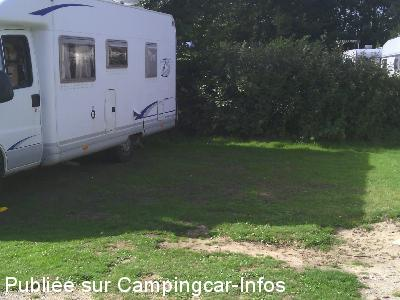
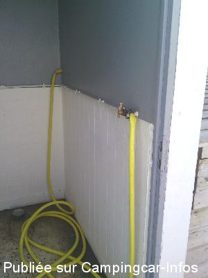
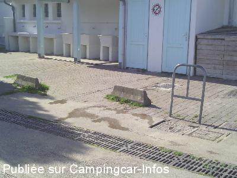

AC = Camping acceptant les camping-cars de :
WISSANT
(N° 519)
Accès/adresse :
Rue de la Source
Camping Municipal 'LA SOURCE' **
62179 WISSANT
Camping Municipal 'LA SOURCE' **
62179 WISSANT
Latitude : (Nord) 50.883813° Décimaux ou 50° 53′ 1′′
Longitude : (Est) 1.658161° Décimaux ou 1° 39′ 29′′
Tarif : 2014
Emplacement : 4,20 €
Personne + 10 ans : 4,40 €
Enfant 3 à 10 ans : 2,70 €
Électricité 5A : 4,10 €
Animal : 1,10 €
Type de borne : Plateforme
Services :


Accès handicapés
Lave-linge
Sèche-linge
Autres informations :
Ouvert du 15/03 au 15/11
400 emplacements
Tél : + 33(0)321 359 246
http://www.ville-wissant.fr
camping.wissant@wanadoo.fr

Le 05/09/2014 par Pelot

Le 05/09/2014 par Pelot

Le 05/09/2014 par Pelot
de
Pelot
le 05/09/2014 :
Camping municipal très chargé en caravanes à l'année (75% des emplacements) avec clotures, barrières ...
Accueil courtois mais minimaliste : Allez voir si une place vous convient...
Aire de service avec grille eaux grises et vidoir WC au sol. Tuyau d'eau pour le remplissage ce qui n'est pas un gage d'hygiène absolue...
Sanitaires anciens mais propres. Accès plage à 600 m. Commerces du centre ville à 500 m.
Une étape correcte entre les deux caps...mais plus vraiment un camping.
Camping municipal très chargé en caravanes à l'année (75% des emplacements) avec clotures, barrières ...
Accueil courtois mais minimaliste : Allez voir si une place vous convient...
Aire de service avec grille eaux grises et vidoir WC au sol. Tuyau d'eau pour le remplissage ce qui n'est pas un gage d'hygiène absolue...
Sanitaires anciens mais propres. Accès plage à 600 m. Commerces du centre ville à 500 m.
Une étape correcte entre les deux caps...mais plus vraiment un camping.
de
A&R
le 23/08/2005 :
Aangename stopplaats. Hopelijk wordt er aan gewerkt om het wat vlakker te maken en properder. Naar ik vernomen heb is het een probeersel. Er zijn wel vuilzakken, geen water noch vuilwaterlozing.
MAAR sommigen zijn het al aan het vervuilen en laten hun vuilwater lopen over de weide bij het verlaten of gaan aan de kant van de weide hun vuil water lozen. PROFICIAT VOOR DEZE VUILAARDS. Men kan echter op de camping 'La Source' in het stadje (+/- 1km) vidangeren voor 1,70€ ! en met een vriendelijkheid onthaal.
Aangename stopplaats. Hopelijk wordt er aan gewerkt om het wat vlakker te maken en properder. Naar ik vernomen heb is het een probeersel. Er zijn wel vuilzakken, geen water noch vuilwaterlozing.
MAAR sommigen zijn het al aan het vervuilen en laten hun vuilwater lopen over de weide bij het verlaten of gaan aan de kant van de weide hun vuil water lozen. PROFICIAT VOOR DEZE VUILAARDS. Men kan echter op de camping 'La Source' in het stadje (+/- 1km) vidangeren voor 1,70€ ! en met een vriendelijkheid onthaal.
de
le 11/08/2004 :
ATTENTION : en pleine saison, il n'y a plus d'accueil pour camping-car car le camping préfère accueillir + de caravanes ! Donc, nous avons dû nous aller sur un parking gratuit à la sortie de la ville, plus ou moins réservé au CC mais sans avoir la possibilité d'avoir la moindre goutte d'eau ni de vidanger !
ATTENTION : en pleine saison, il n'y a plus d'accueil pour camping-car car le camping préfère accueillir + de caravanes ! Donc, nous avons dû nous aller sur un parking gratuit à la sortie de la ville, plus ou moins réservé au CC mais sans avoir la possibilité d'avoir la moindre goutte d'eau ni de vidanger !